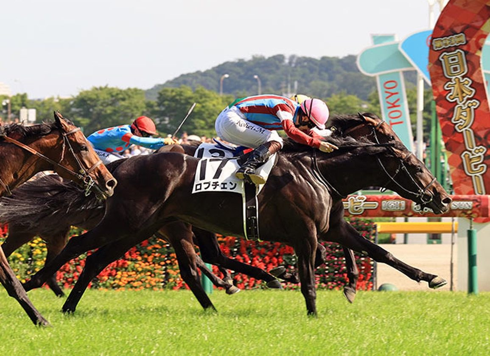

Lovcen conquista el Tokyo Yushun y firma el segundo escalón de la Triple Corona japonesa

El potro entrenado por Haruki Sugiyama y conducido por Kohei Matsuyama se impuso este domingo 31 de mayo sobre los 2.400 metros del hipódromo de Tokio con un crono de 2:22.7, confirmando los pronósticos previos tras su victoria en la Satsuki Sho y dejando vivo el sueño de la Triple Corona, que se cerrará en otoño con la Kikuka Sho.
Lovcen (K. Matsuyama) conquistó este domingo 31 de mayo el Tokyo Yushun (Japanese Derby), el Grupo I de 2.400 metros que constituye el segundo escalón de la Triple Corona masculina japonesa, en el hipódromo de Tokio (Fuchū). El potro de tres años, propiedad de Forest Racing y entrenado por Haruki Sugiyama, paró el crono en 2:22.7 sobre la hierba del Tokyo Racecourse.
El triunfo confirma la condición de favorito que arrastraba desde la victoria en la Satsuki Sho (2.000 Guineas japonesas) en abril, escalón inicial del circuito clásico. Tal y como apuntábamos en el preview previo, el binomio Sugiyama/Matsuyama acumulaba referencias contrastadas sobre la generación y mantenía la opción intacta a la Triple Corona.
Hacia la Kikuka Sho de octubre
La Triple Corona japonesa para potros se cierra con la Kikuka Sho (St Leger japonés), programada para mediados de octubre en el hipódromo de Kioto sobre 3.000 metros. Solo siete potros han completado la triple corona japonesa en la era moderna: el más reciente fue Contrail en 2020. Lovcen llega como tercer caballo en la última década que se planta en la última carrera con la triple corona en juego.
El cuadro de Forest Racing y Sugiyama mantendrá ahora una hoja de ruta tradicional con un descanso veraniego y un punto de retorno previsto en septiembre para llegar afinado a Kioto. Antes de la Kikuka Sho, la cita más probable para Lovcen es el Kobe Shimbun Hai de septiembre como prueba intermedia clásica.
— Redacción de Galope al Día